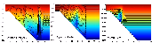
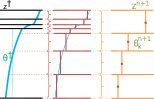

2020 December 1
| Alistair Adcroft | Matthew Harrison | Niki Zadeh |
| Robert Hallberg | Marshall Ward |

Strong algorithmic heterogeneity!

Vertical field interpolation
Old/new superset: \(2N-1\)
Integrate each sublayer
Replace largest sublayer with
\[h^s_j \theta^s_j - \sum_{j'=1}^m \left( 1 - \delta_{j j'} \right) h^s_{j'} \theta^s_{j'}\]
Sum sublayers to new layer
Fortran 2003 (mostly)
MPI paralleization
netCDF I/O
Floating point reproducibility:
\[a + (b + c) ≠ (a + b) + c\]
Targeting OpenACC parallelization
Time permitting: